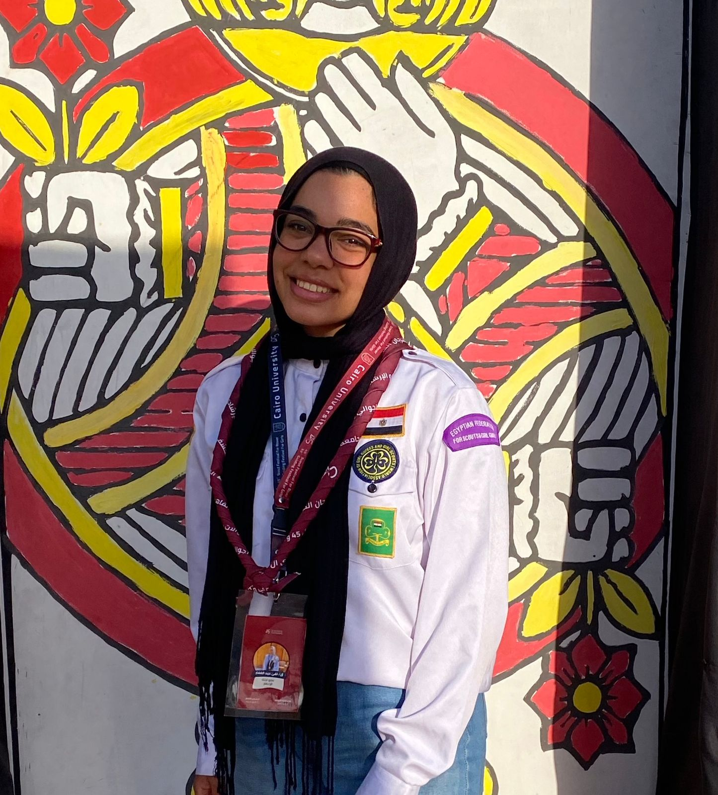
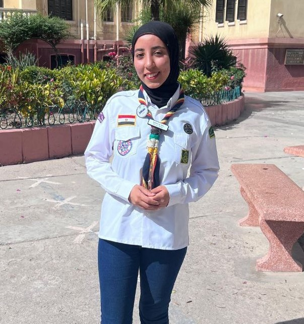
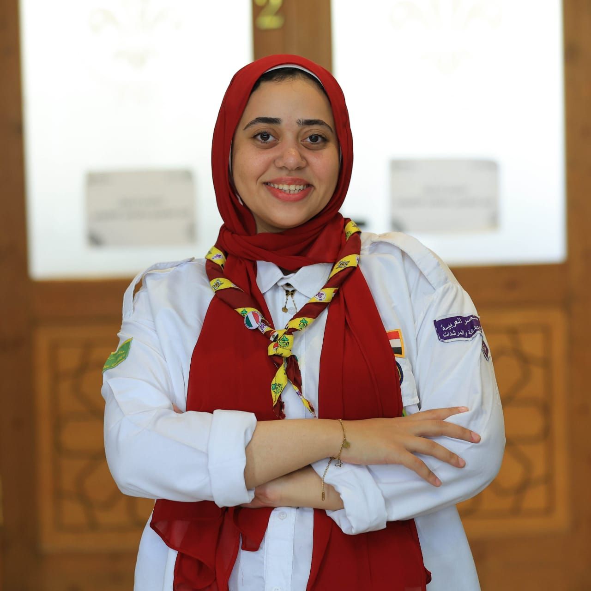

تقي عبد الغفار ابراهيم
عضو لجنه التكنولوجيا المعلومات
محافظة القاهرة
بكالريوس حاسبات وذكاء اصطناعي جامعة القاهرة
عالمة بيانات

ميرنا طارق عبد العزيز
عضو لجنه التكنولوجيا المعلومات
محافظة الاسكندرية
بكالريوس حاسبات و علوم البيانات جامعة الاسكندرية
عالمة بيانات

شادن أشرف الريس
عضو لجنه التكنولوجيا المعلومات
محافظة الاسكندرية
بكالوريوس تجارة فرنسي

كاترين صفوت صلاح
عضو لجنه التكنولوجيا المعلومات
محافظة القاهرة

ليلى محمد عتمان
عضو لجنه التكنولوجيا المعلومات
محافظة البحيرة

كاترين ميخائيل اسرائيل
عضو لجنة تكنولوجيا المعلومات
محافظة السويس
بكالريوس حاسبات ومعلومات
الشارة الوطنية

مريم مجدى عبدالعزيز
عضو لجنة تكنولوجيا المعلومات
محافظة الاسماعلية
بكالريوس علوم الرياضة
الشارة الوطنية

سما الجيوشى
عضو لجنة تكنولوجيا المعلومات
محافظة الغربية
ليسانس السن صينى _ انجليزى
الشارة الوطنية

مريم عبدالمنعم ابراهيم
عضو لجنة تكنولوجيا المعلومات
محافظة الشرقية
بكالريوس علوم زراعية
الشارة الوطنية

سلمي ذكي محمد يوسف
عضو لجنة تكنولوجيا المعلومات
محافظة السويس
بكالريوس اخصائي رقابة الجودة
مساعد مفوض برامج

مي منتصر الحسن
عضو لجنة تكنولوجيا المعلومات
عضو لجنه برامج مركزيه
محافظة القاهرة
بكاليورس حقوق

سحر الشاذلى سيف الدين حسن
عضو لجنة تكنولوجيا المعلومات
محافظة أسوان
دكتوراة فلسفة التربية
حاصلة ع وسام القائدة المتميزة من الإقليم العربى

هنا خالد الشرقاوى
عضو لجنة تكنولوجيا المعلومات
محافظة الغربية
ليسانس ألسن
الشارة الوطنية